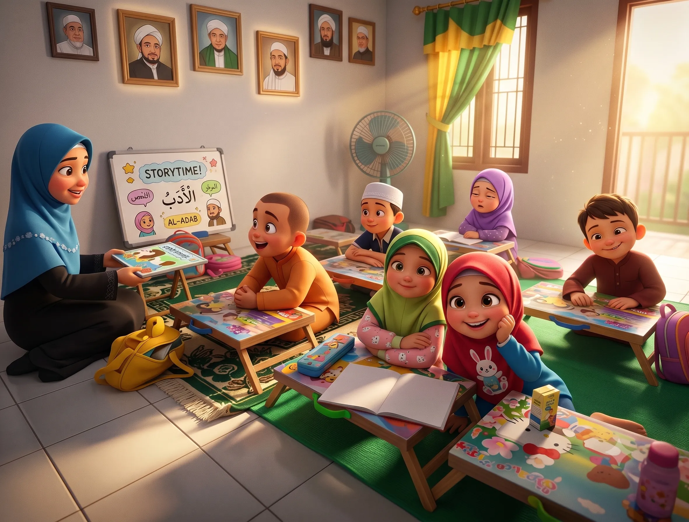

🔐
Login Raport Santri
Masukkan NIS dan Password yang diterima saat pendaftaran
🔒 Lupa NIS/Password? Hubungi admin atau ustadzah di cabang Anda.
Lembaga pendidikan Islam anak usia 4–10 tahun yang memadukan Tahsin Al-Quran, Calistung, Fiqih & Akhlak dalam suasana belajar yang ceria dan menyenangkan.
Lembaga pendidikan Islam anak usia 4–10 tahun yang memadukan Tahsin Al-Quran, Calistung, Fiqih, Akidah & Akhlak dalam suasana belajar yang ceria, interaktif, dan menyenangkan. Siapkan anak Anda sejak dini untuk menjadi insan Qurani yang unggul!
Investasi terbaik orang tua adalah menanamkan kecintaan pada Al-Quran sejak dini
"Bacalah dengan menyebut nama Tuhanmu yang menciptakan."
QS. Al-'Alaq: 1"Sebaik-baik kalian adalah orang yang mempelajari Al-Quran dan mengajarkannya."
HR. Bukhari No. 5027"Allah akan meninggikan orang-orang yang beriman di antaramu dan orang-orang yang diberi ilmu pengetahuan beberapa derajat."
QS. Al-Mujadilah: 11"Jika manusia meninggal, terputuslah amalannya kecuali tiga perkara: sedekah jariyah, ilmu yang bermanfaat, atau anak shaleh yang mendoakan orang tuanya."
HR. Muslim No. 1631"Barang siapa menempuh jalan untuk mencari ilmu, Allah akan memudahkan baginya jalan menuju surga."
HR. Muslim No. 2699"Perumpamaan orang yang belajar ilmu di waktu kecil adalah seperti ukiran di atas batu (kokoh dan abadi)."
Atsar Ibnu Abbas r.a.Klik kartu untuk melihat detail silabus lengkap setiap pilar
Persiapan SD: Calistung Bahasa Indonesia & Hijaiyah untuk usia 4–6 tahun
Praktek Wudhu & Sholat Ceria — bimbingan ibadah harian secara interaktif
Pondasi Tauhid & Akhlak Anak Soleh — kisah nabi & pembiasaan adab
Rapor Perkembangan & Pendampingan Orang Tua untuk kesinambungan belajar
Pantau perkembangan putra-putri Anda melalui 4 fase evaluasi terstruktur
Lihat keceriaan santri Bintang Rabbani dalam setiap kegiatan belajar dan peribadahan.
*gambar atau photo photo berasal dari gambar asli proses kegiatan pembelajaran namun diedit dengan AI





Ekosistem belajar modern, interaktif, dan terstruktur untuk membentuk generasi Qurani yang cerdas IQ & SQ
Per Sesi diisi oleh Maksimal 7 Santri sehingga Santri dan Guru akan Fokus dalam Pembelajaran.
Media belajar dilengkapi dengan Visualisasi layar Interaktif, sehingga tidak membosankan bagi anak-anak dalam belajar.
Belajar BACA TULIS DAN HITUNG dilengkapi dengan Pengetahuan baca Al-Qur'an dan Praktik Ibadah. Sehingga Anak pintar dari sisi IQ (Kecerdasan Intelektual) dan SQ (Kecerdasan Spiritual).
Biaya Terjangkau Dengan Metode pembayaran Simple (Transfer Bank).
Pendampingan pengerjaan tugas pelajaran & PR sekolah khusus untuk santri usia 6 sampai dengan 12 Tahun.
Raport Pembelajaran yang akan disajikan kepada orang tua secara bulanan, sehingga Progres peningkatan pembelajaran dapat diketahui oleh para orang tua terhadap sang buah hati.
Unduh brosur resmi, tonton video iklan profil, serta modul pendukung pembelajaran santri secara gratis.
Testimoni riil dari para orang tua santri yang merasakan langsung perkembangan belajar & mengaji putra-putrinya
Silakan pilih layanan di bawah ini. Klik Pendaftaran Santri Baru untuk mendaftarkan anak Anda, atau klik Portal Pengelolaan Cabang untuk pendaftaran cabang baru & monitoring cabang berjalan.
Santri yang didaftarkan langsung oleh orang tua pada formulir pendaftaran santri otomatis tercatat pula ke cabang yang dipilih.
| No | NIS | PASSWORD | NAMA LENGKAP SANTRI | USIA | JENIS KELAMIN | NAMA ORANG TUA / WALI | NO WHATSAPP WALI | ALAMAT LENGKAP | PROGRAM BELAJAR | AKSI |
|---|---|---|---|---|---|---|---|---|---|---|
| Belum ada santri awal ditambahkan. Klik tombol "+ Tambah Santri Aktif" di atas. | ||||||||||
🔔 Keseluruhan data cabang dan santri terintegrasi penuh ke menu Admin Pusat untuk monitoring operasional.
Masuk untuk memonitor data operasional, sarana prasarana, santri, dan mengajukan update perubahan data.
Jazakumullahu Khairan! Data telah tersimpan dan terkirim ke Admin Pusat Bintang Rabbani.